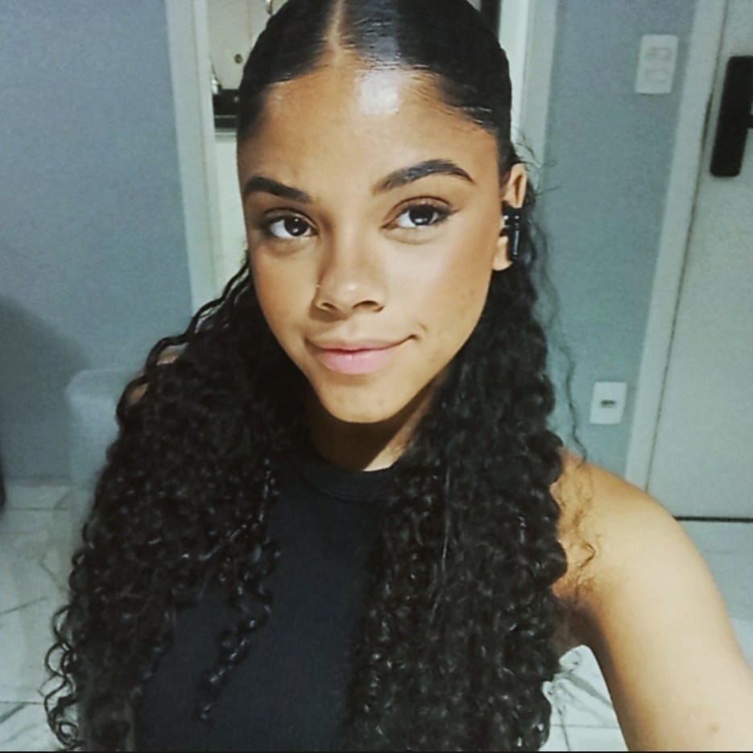

Me chamo Júlia Polycarpo Cardozo, tenho 16 anos e atualmente estou cursando o Ensino Médio no SESI, juntamente com o Ensino Técnico em Análise e Desenvolvimento de Sistemas no SENAI, em São Paulo. Além disso, sou integrante do grupo de Robótica MecaChonos, onde tive a oportunidade de desenvolver habilidades em mecatrônica, eletroeletrônica, programação e, especialmente, em trabalho em equipe.
Possuo conhecimentos em programação, adquiridos por meio da formação técnica em Análise e Desenvolvimento de Sistemas, onde aprofundei minhas habilidades em desenvolvimento de software. Tenho também experiência prática em mecatrônica e eletroeletrônica, aplicadas no desenvolvimento de projetos de robótica, nas quais atuo nas áreas de mecânica e programação como integrante da equipe MecaChonos. Além disso, sou capacitada no uso do Pacote Office, o que me permite trabalhar de forma eficiente com ferramentas como Word, Excel e PowerPoint. Minha experiência também inclui trabalho em equipe, uma habilidade que desenvolvi e aprimorei ao longo da minha participação em competições de robótica, como a FIRST Robotics Competition.